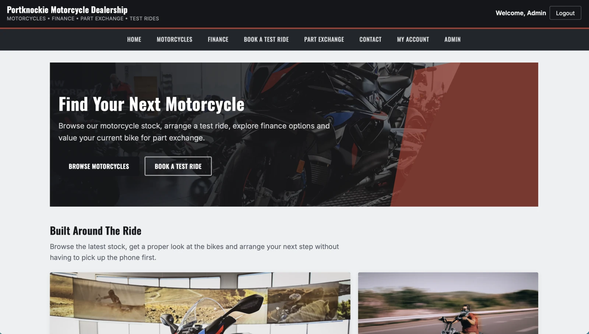

02 · Paused · Web & iOS
Portknockie
Motorcycle Dealership.
The full-stack PHP and MySQL website works. I also have an iOS prototype that works with the local PHP API and database, but the hosted site blocks its requests as bot traffic. I’ve paused the iOS integration while I look into the hosting issue.
Paused
Overview
The website works. The iOS connection is paused.
The PHP and MySQL website handles motorcycle listings and test ride bookings. Customers choose a motorcycle, pick a date and time, enter their details, then review the booking.
The iOS prototype works against the local PHP API and SQL database. The hosted domain blocks its requests as bot traffic, so I’ve paused work on connecting it to the live site.
Test ride bookings
The server checks availability before saving a booking.
The booking form has four steps: choose a motorcycle, pick a date and time, enter customer details, then confirm. Availability is checked against existing bookings, and the submitted booking is validated again on the server.
That second check matters. A time slot might be taken after someone starts filling in the form.
Web & iOS
The iOS prototype works locally, but not against the hosted site yet.
The app can use the local PHP APIs and SQL database. Requests from the iOS prototype to the hosted domain are blocked as bot traffic.
That means the website is working, and the iOS prototype works locally, but the full iOS-to-hosted-site setup isn’t working yet.
Engineering
The booking API checks availability on the server.
Motorcycle inventory and test ride bookings are stored in the SQL database. Availability is checked before a booking is created, then checked again when the customer submits the form.
The website and its PHP API work. I’ve paused the live iOS connection while I look into why the hosted domain blocks the app’s requests.
Next steps
The iOS integration is on hold.
The website is live. I’ll pick up the iOS connection again once I’ve worked out why the hosted site treats its requests as bot traffic.